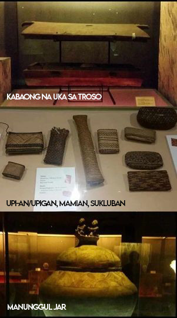
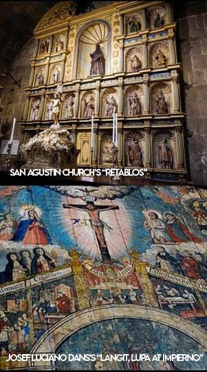
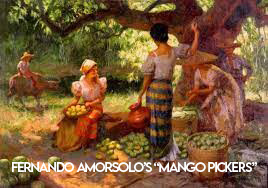
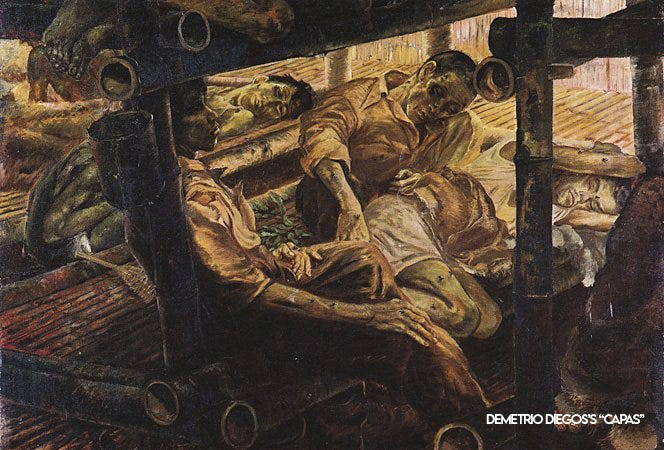
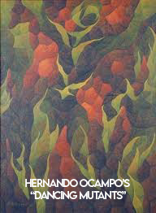

Introduction
The Philippines boasts a vibrant and diverse tapestry of visual arts that reflects its rich cultural history and dynamic societal changes. From the indigenous artistry of the Pre-Colonial period to the influences of various colonial regimes and the flourishing of contemporary expressions, the country's visual arts narrate a compelling story of resilience, adaptation, and creativity.
Pre-Colonial Art: Roots of Indigenous Expression
The Pre-Colonial period in the Philippines was marked by a profusion of indigenous art forms, reflecting the diverse cultures that thrived across the archipelago. Tribes such as the Ifugao, Maranao, and Tagalog showcased their craftsmanship through intricate carvings, vibrant textiles, and symbolic pottery. The use of natural materials and a connection to nature were central themes, encapsulating the deep spiritual and cultural roots of the Filipino people.
Spanish Colonial Regime: Fusion of Cultures
The Spaniards arrived in 1521, they brought with them a new era of artistic expression that blended seamlessly with the indigenous culture. This fusion of influences shaped the artistic landscape, using visual narratives to convey religious messages and later evolving into a diverse array of forms.
American Colonial Regime: Shaping Modern Art
The American colonial period brought about significant changes in Philippine society, including the art scene. The introduction of Western techniques and mediums influenced artists like Fernando Amorsolo, who is renowned for his pastoral scenes and portraits that captured the idyllic rural life. The era saw the rise of art schools, shaping the foundations of modern Philippine art.
Japanese Occupation: Art Amidst Adversity
The Japanese occupation during World War II posed challenges for Philippine artists, yet it also became a period of resistance through art. Works from this time often reflected the struggles and resilience of the Filipino people. The emotional depth of these creations served as a testament to the power of art to convey the human experience even in times of adversity.
Post-War to Contemporary Period: A Flourishing Mosaic
The post-war period witnessed a resurgence of Philippine art as the nation rebuilt itself. Artists such as Vicente Manansala and H.R. Ocampo embraced modernism, while social realists depicted the complexities of post-colonial Filipino society. Contemporary Filipino artists continue to explore a wide range of themes, from political commentary to environmental concerns, employing various mediums such as installation art, digital media, and performance art.
References
- Co, J. (2018, April 6). National Museum of Artifacts: Pre-Colonial - Jacob Co - Medium. Medium. https://medium.com/@cojacob30/national-museum-of-artifacts-pre-colonial-e22bd8667c2f
- Hernandez, E. M. (n.d.). The Spanish Colonial Traditions in Philippine Visual Arts. GOVPH. Retrieved December 10, 2023, from https://ncca.gov.ph/about-ncca-3/subcommissions/subcommission-on-the-arts-sca/visual-arts/the-spanish-colonial-tradition-in-philippine-visual-arts/
- Hernandez, E. M. (n.d.). The American and Contemporary Traditions in Philippine Visual Arts. GOVPH. Retrieved December 10, 2023, from https://ncca.gov.ph/about-ncca-3/subcommissions/subcommission-on-the-arts-sca/visual-arts/the-american-and-contemporary-traditions-in-philippine-visual-arts/
- StudyMoose. (2022, November 1). A Glimpse of the Japanese Era through Filipino Paintings. https://studymoose.com/a-glimpse-of-the-japanese-era-through-filipino-paintings-essay
- Benesa, L. (n.d.). Philippine Contemporary Art as a Post War Phenomenon. GOVPH. Retrieved December 10, 2023, from https://ncca.gov.ph/about-ncca-3/subcommissions/subcommission-on-the-arts-sca/visual-arts/philippine-contemporary-art-as-a-post-war-phenomenon/